Мужская меховая зимняя шапка
gm_hw003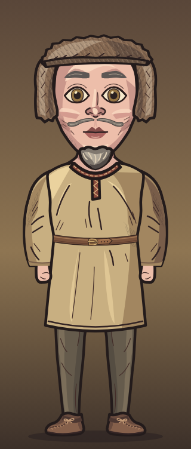
32 × 32
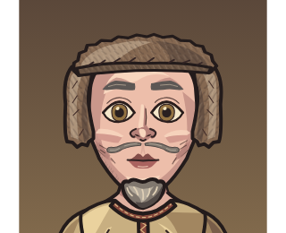
—
Женская зимняя меховая шапка поверх нижнего убора
gm_hw011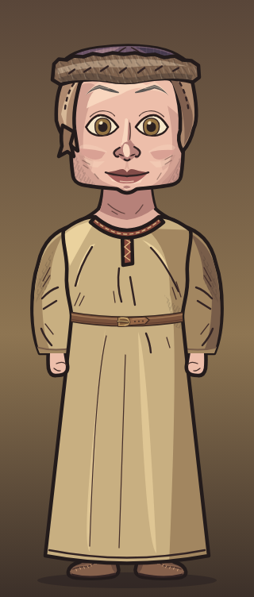
32 × 32
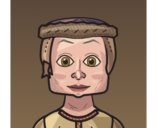
Новгород, XIV век: икона показывает мужские княжеские шапки, а нижний женский убор не виден.
Детская меховая зимняя шапка
gm_hw017 32 × 32
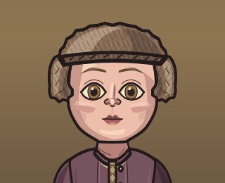
До и после
До После
После Новгород, XIV век: изображены взрослые мужчины; детский размер шапки не показан.
Западный капюшон с короткой пелериной
gm_fr003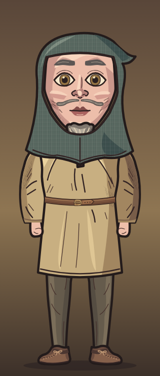
32 × 32
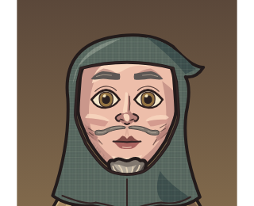
Швеция, 1350–1370 годы: находка позднее целевого периода, с длинным концом капюшона.
Капюшон или отдельный шерстяной куколь дорожного типа
gm_gm013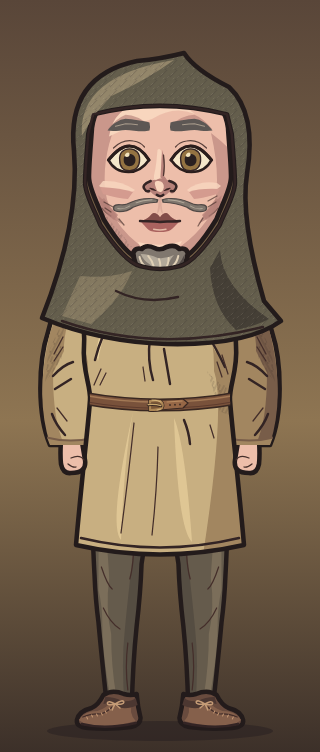
32 × 32
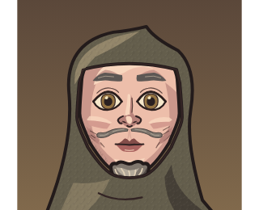
Швеция, 1350–1370 годы: шерстяной капюшон с длинным кончиком, позднее новгородской модели XIII века.
Мягкая шерстяная мужская шапка
gm_hw001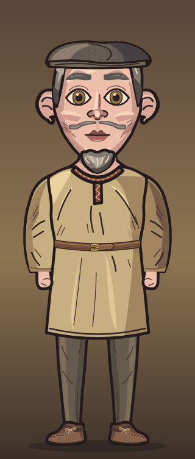
32 × 32
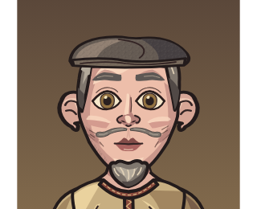
Новгород, вторая половина XIV века: войлок и широкий отворот вместо мягкой шерстяной шапки целевого периода.
Простая войлочная шапка
gm_hw002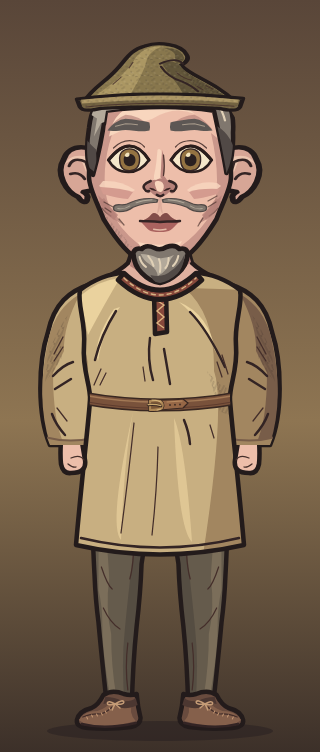
32 × 32
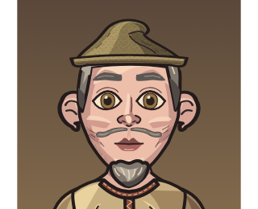
Новгород, вторая половина XIV века: находка позднее периода 1200–1250, с широким отворотом.
Льняная повязка или головной плат для работы
gm_hw005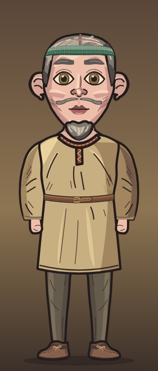
32 × 32
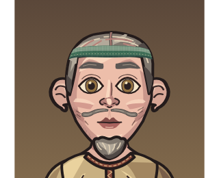
Новгород, первая треть XIII века: изображено большое покрывало мафорий, а не простая рабочая повязка.
Женский нижний головной чепец/повой
gm_hw006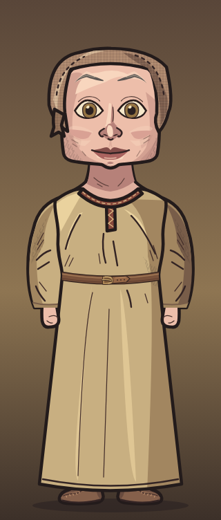
32 × 32
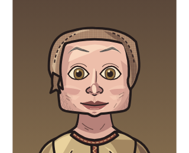
—
Женское головное покрывало
gm_hw007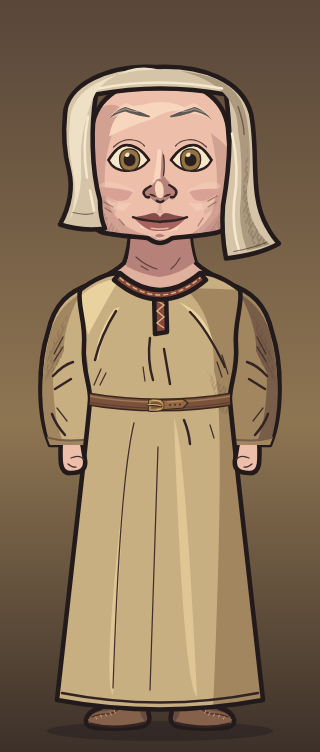
32 × 32
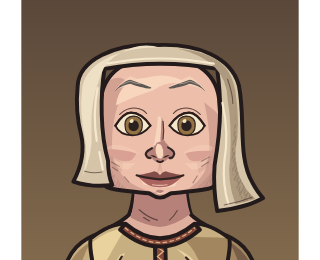
Изображена святая в храмовой фреске и праздничном уборе, а не обычная новгородская женщина в повое или убрусе.
Женская налобная повязка/очелье
gm_hw008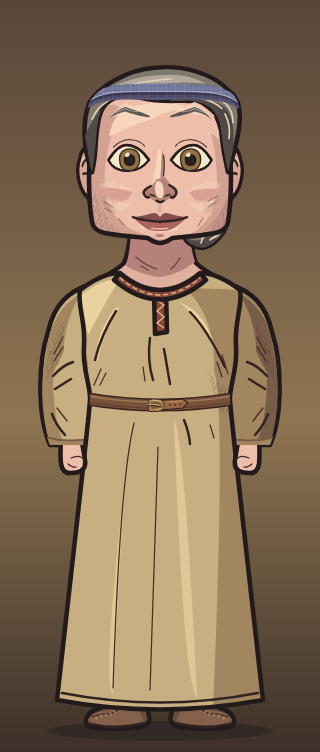
32 × 32
Найдено в предполагаемом мужском погребении в Торжке; назначение остается не вполне ясным: край головного убора или погребальная лента.
Девичья лента или мягкое очелье
gm_hw010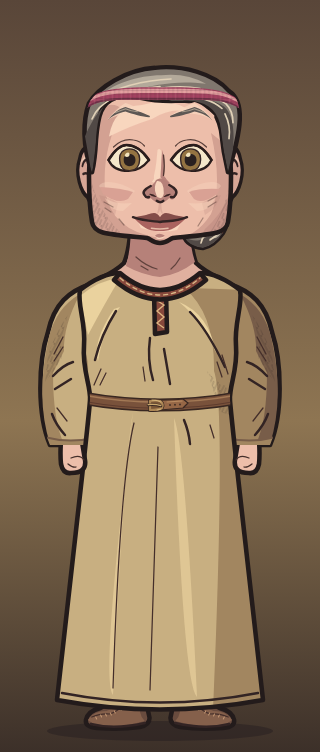
32 × 32
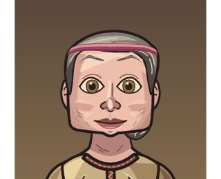
Реконструирована взрослая женщина из подмосковных курганов, а не новгородская девушка; мягкая форма очелья источником не подтверждается.
Мягкий тканевый чепец девушки/женщины
gm_hw012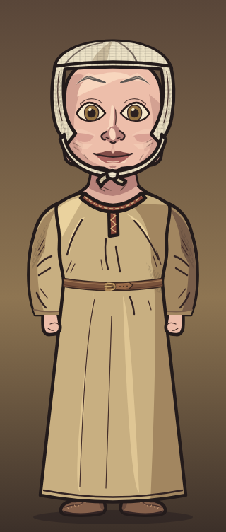
32 × 32
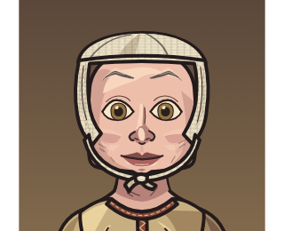
Показан украшенный верхний убор с покрывалом, а не простой мягкий чепец; реконструкция не доказывает именно такую форму для Новгорода.
Монашеский капюшон/куколь общего типа
gm_hw013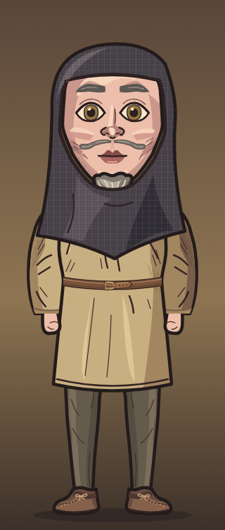
32 × 32
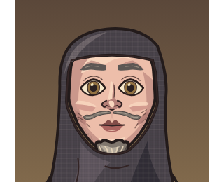
Показан заостренный схимнический куколь, а не общий повседневный монашеский капюшон; икона датируется около 1288 г., немного позже целевого периода.
Архиерейская митра раннего типа — литургическая
gm_hw014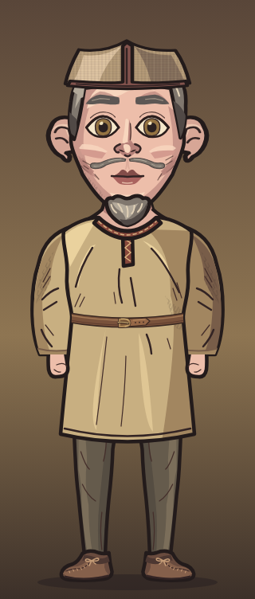
32 × 32
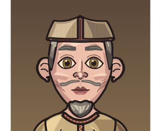
Икона относится к 1730–1740 годам и не подтверждает наличие митры на Руси в 1200–1250 годах.
Детская мягкая тканевая шапочка
gm_hw016 32 × 32
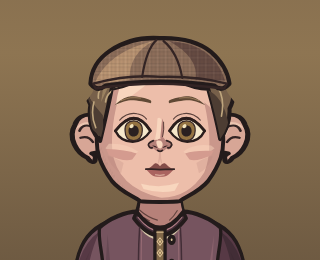
До и после
ДоПосле Изображена девушка, а не маленький ребенок; убор украшенный и с покрывалом, не простой мягкий чепец.
Шапка
headgear:cap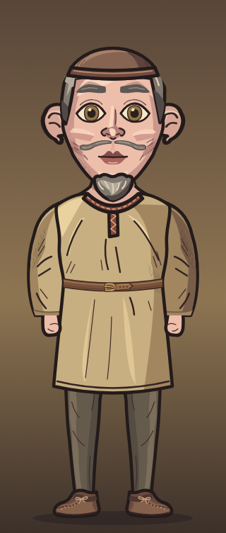
32 × 32
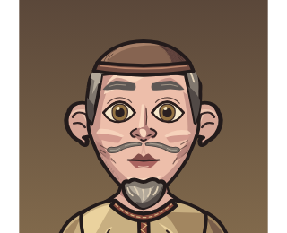
Находка относится ко второй половине XIV века и предположительно принадлежала боярину; фотография иллюстрирует русскую, а не остальные указанные культуры.
Войлочная шапка с отворотом
headgear:child_felt_turnup 32 × 32
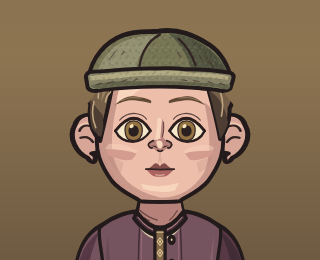
До и после
ДоПосле Находка взрослая, вероятно боярская, и датируется второй половиной XIV века; возраст ребенка не подтвержден.
Войлочный колпак
headgear:felt_cap 32 × 32
Находка датирована второй половиной XIV века, а не 1200–1250; образец из Руси.
Завязная шапочка
headgear:linen_coif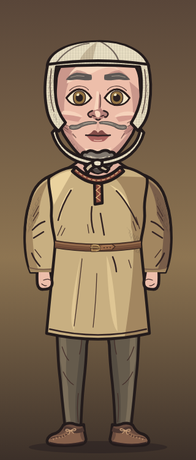
32 × 32
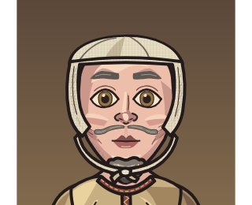
Лён и точный крой на миниатюре не различимы; французская рукопись покрывает лишь западный вариант культур из TSV.
Наумбургская шапочка с подбородочной лентой
headgear:naumburg_linen_cap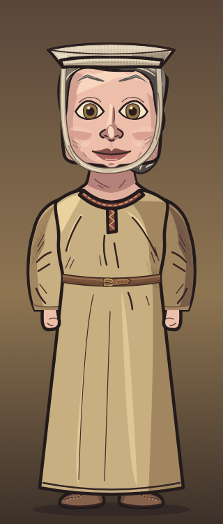
32 × 32
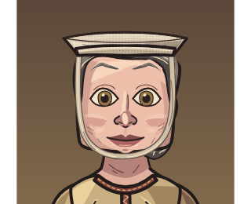
Это каменная фигура, а не предмет ткани; источник описывает позолоченный капюшон и льняную ленту, но не льняную шапочку.
Мягкая шапка с тканым околышем
headgear:nw_baltic_cloth_cap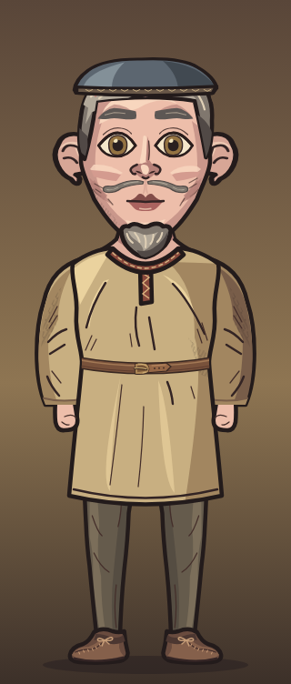
32 × 32
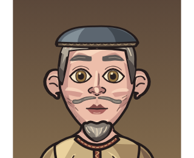
Ближайший региональный пример — Siksälä headband с плетёными хвостами, но это не мягкая шапка; источник также запрещает копирование без разрешения. Ограничение источника: В INDEX нет фотографии мягкой шапки с тканым околышем.
Шлем с Дубошина раскопа
headgear:nw_duboshin_helm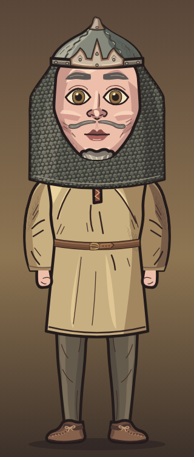
32 × 32
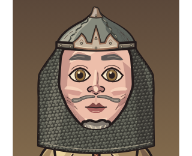
На фото шлем из Чёрной Могилы в Чернигове X века, а не фрагмент с Дубошина; сопоставима четырёхчастная конструкция.
Шлем из Гьёрмундбю
headgear:nw_gjermundbu_helm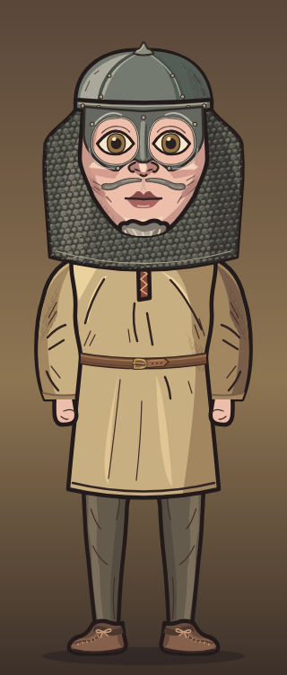
32 × 32
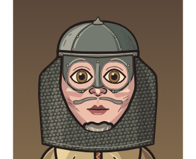
Шлем изготовлен около 950–975 годов, значительно раньше 1200–1250 годов.
Железная шляпа с полями
headgear:nw_iron_hat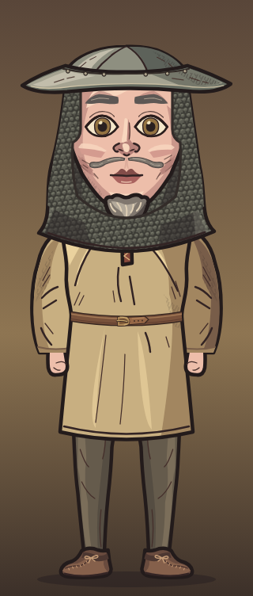
32 × 32
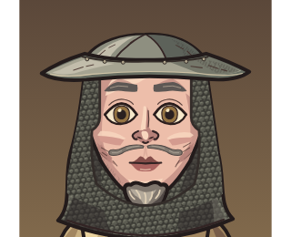
Это прибалтийская находка из Кодасоо, Эстония, а не западноевропейский экземпляр; тип и XIII век соответствуют близкой форме.
Карельское покрывало с тканой повязкой
headgear:nw_karel_veil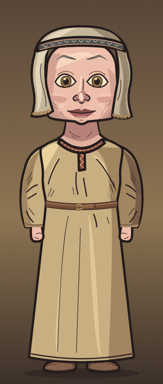
32 × 32
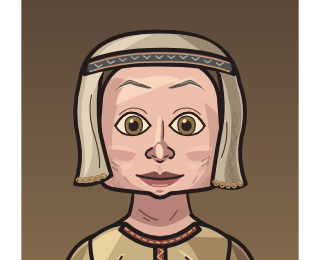
На фото современная носительница костюма; это реконструкция 1952 года, а не погребальная находка. Источник описывает покрывало как шерстяное.
Скандинавский шерстяной капюшон
headgear:nw_nordic_hood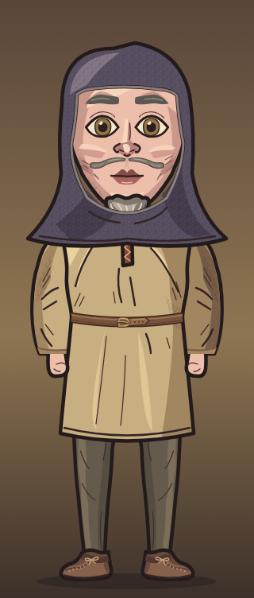
32 × 32
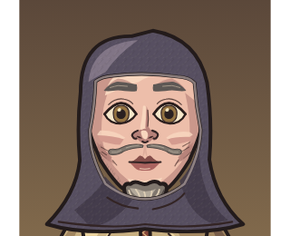
Находка датируется концом XI века, раньше целевого периода; культурная принадлежность Скольдехамнского погребения обсуждается как скандинавская и саамская.
Скандинавский льняной плат
headgear:nw_nordic_linen_veil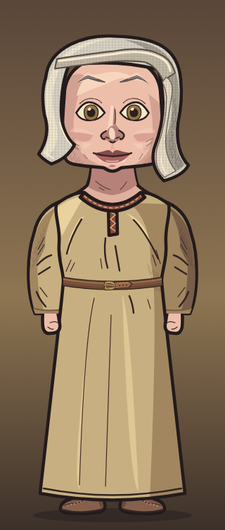
32 × 32
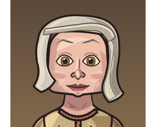
Миниатюра французская, не скандинавская; лён и местное бытование источником не установлены.
Новгородский плат с ромбощитковыми кольцами
headgear:nw_nov_rhombic_band 32 × 32
На фото только металлическое кольцо, без тканого очелья и способа крепления.
Новгородская шерстяная шапка с отворотом
headgear:nw_nov_round_cap 32 × 32
Новгород, вторая половина XIV века, примерно на полтора столетия позже; находка войлочная, без точного совпадения шерстяной модели.
Шлем из Пакальнишкяя
headgear:nw_pakalniskiai_helm 32 × 32
—
Шерстяное очелье с ромбами
headgear:rus_diamond_band 32 × 32
Подмосковье, середина XII — начало XIII века; находка из Никольской курганной группы, а не Новгорода.
Наплечное покрывало
headgear:shoulder_veil 32 × 32
—
Покрывало с подбородочной повязкой
headgear:wimple 32 × 32
—
Платок
headgear:wrap 32 × 32
—
убрус
headscarf 32 × 32
—
бармица
wp_barmitsa 32 × 32
—
шлем конический (тип I)
wp_helmet_conical 32 × 32
—
навершие-втулка шлема (для еловца)
wp_helmet_finial
 32 × 32
32 × 32
Деталь показана установленной на полном шлеме, а не отдельно.
шлем с полной личиной
wp_helmet_full_mask 32 × 32
Образец из Липовцов связан с половецкой и южнорусской средой, а не с Новгородом; на снимке отсутствует навершие.
западноевропейский шлем-горшок раннего типа
wp_helmet_great_helm 32 × 32
Находка происходит из Померании и датируется 1251–1300 годами; её присутствие на Руси не подтверждено.
шлем с полумаской (тип IV)
wp_helmet_halfmask 32 × 32
На снимке показана только полумаска, не весь шлем; контекст предварительно датирован второй половиной XIII — первой четвертью XIV века, позже целевого периода.
шапель (железная шляпа)
wp_helmet_kettle_hat 32 × 32
Предмет найден в Эстонии, а фотография показывает музейную экспозицию, не находку из Руси; точный тип шапели для Новгорода не установлен.
наносник шлема
wp_helmet_nasal 32 × 32
Показан отдельный элемент из собрания Изборска, а не шлем целиком; предмет не является находкой из Новгорода.
шлем сфероконический (тип II)
wp_helmet_spheroconical 32 × 32
Образец из Киева; точный тип II для Новгорода не установлен, носовая часть шлема позолочена.
куполовидный шлем западного типа с наносником
wp_helmet_western 32 × 32
Предмет из Северо-Западной Европы датируется XI–XII веками; его регион и дата не подтверждают западный куполовидный шлем на Руси 1200–1250 годов.
кольчужный капюшон
wp_mail_coif 32 × 32
Находка происходит с острова Готланд, а не из Руси; статья датирует предмет XIII веком, но не связывает его с новгородским вооружением.
отдельный кольчужный ворот (оплечье)
wp_mail_collar 32 × 32
Немецкий предмет XVI века значительно позднее целевого периода и не происходит из Руси; ранний русский отдельный ворот источником не подтверждён. Ограничение источника: Аналог относится к XVI веку; отдельный ворот для Руси 1230 года источником не подтверждён.
Очелье с кольцами
headgear:child_rus_browband 32 × 32
До и после
ДоПосле На фото показаны только кольца, без ткани или кожи очелья; детский комплект и точная конструкция не подтверждены.
Рязанская шапка с отворотом
headgear:rus_wedge_cap 32 × 32
Изображение взято с каменной иконы Бориса и Глеба XIII века из Солотчинского монастыря; это не археологическая находка из Рязани, а меховая кромка неразличима.
подшлемник и подвеска шлема
wp_helmet_liner 32 × 32
Это реконструкция черниговского вооружения первой половины XIII века; крепление и подвеска подшлемника в изображении не показаны.
Статусная мужская шапка с меховой опушкой
gm_hw004 32 × 32
Показан убор святых князей на каменной иконе XIII века; меховую опушку и соответствие конкретной статусной шапке источник не подтверждает.
Степная бокка
headgear:bocca 32 × 32
Погребение датируется первой четвертью XIV века, поэтому это аналог на несколько десятилетий позднее 1200–1250 годов; памятник находится в Нижнем Поволжье.
Шапка с меховым околышем
headgear:fur_cap 32 × 32
Изображён русский княжеский убор XIII века; меховое оформление отворота остаётся предположительным, а культуры Карелии, Балтики и Севера этой картинкой не представлены.
Шлем из Лыкова
headgear:nw_lykovo_helm 32 × 32
На фотографии показан сам шлем без кольчужной бармицы; датировка и княжеская атрибуция в источниках приводятся как исследовательские версии.
Клинчатая шапка с меховой кромкой
headgear:nw_nov_seamed_cap 32 × 32
Находки из раскопа Дубошин II датируются 1350–1360-ми годами; клиновидные швы и меховая кромка у этих шапок не подтверждены.
Шелом с полумаской
headgear:nw_rus_half_mask 32 × 32
Это реконструкция черниговского вооружения первой половины XIII века, а не находка Северо-Западной Руси; точная форма конкретной полумаски не устанавливается.
Плат с височными кольцами
headgear:temple_rings 32 × 32
Основой служат материалы курганов вятичей Подмосковья конца XI–XII века; это региональный аналог, не новгородская находка и не вещь с точной датой 1200–1250.
Шлем с бармицей
headgear:helmet 32 × 32
Изображены черниговские воины первой половины XIII века; это не конкретный новгородский шлем и не археологический комплект.
Спиральный венчик из Сиксаля
headgear:nw_baltic_spiral_band 32 × 32
На фото показаны лента и кисть, а не целый замкнутый венчик; погребение CCXXXIII датировано XIV веком.
Закрытый шелом
headgear:nw_great_helm 32 × 32
Это конкретный немецкий шлем 1251–1300 годов; кольчужная бармица на нём не видна.
Простой новгородский плат
headgear:nw_nov_plain_veil 32 × 32
Это святая в нарядном покрывале; простота убора и повседневное ношение источником не подтверждаются. Оригинал фрески датирован 1199 годом, фото показывает копию 1913 года.
Тёплый новгородский повой под платом
headgear:nw_nov_povoy 32 × 32
Отдельный нижний повой, утепление и второй слой под платом на фреске не различимы; показан святой персонаж в украшенном уборе.
Высокий шлем с бармицей
headgear:tall_helmet 32 × 32
На снимке сама бармица отсутствует; шлем богато украшен и не устанавливает точную форму игрового варианта.
Юаньская охотничья шапка
headgear:yuan_hunting_cap 32 × 32
Картина датирована 1280 годом и не называет показанный тип шапки; фигуры и уборы на общем плане малы.